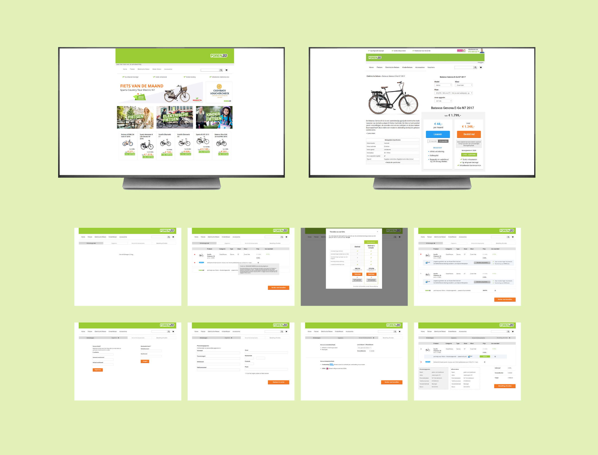
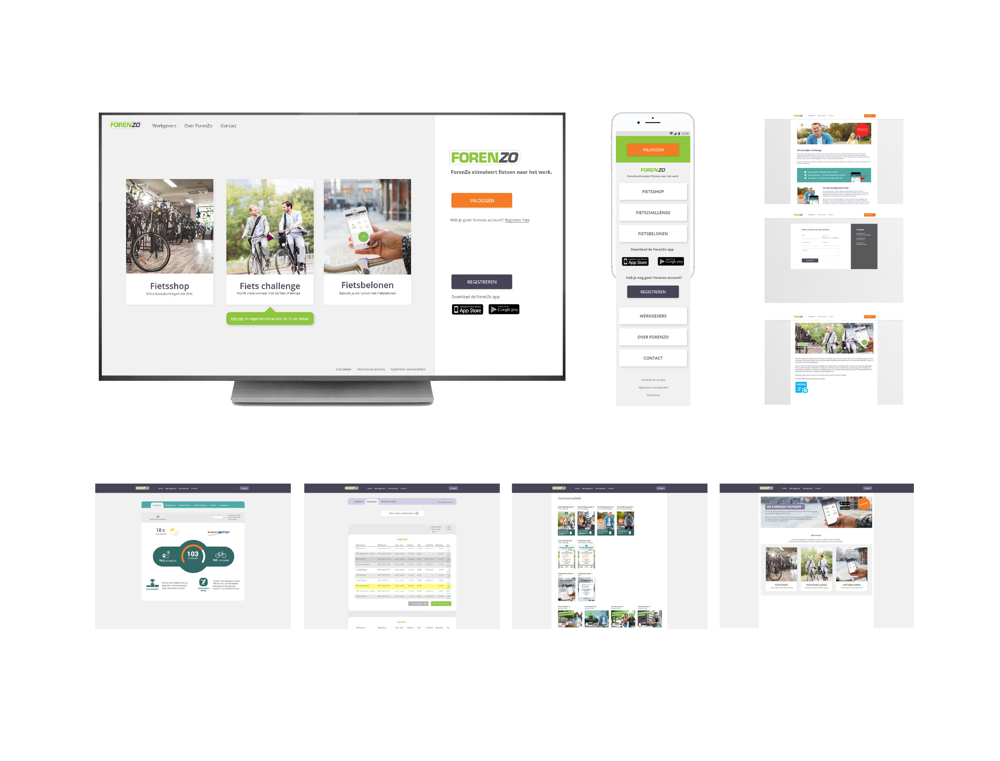

Pieter Goossens
Digital designer
ForenZo levert fietsstimuleringsdiensten aan werkgevers in Nederland. ForenZo ondersteunt bedrijven bij het stimuleren van ‘fietsen naar het werk’ met behulp van een app, website, fietsshop en fietspromotiemateriaal.
ForenZo is een product wat al jaren loopt en verschillende subproducten kent. De uitdaging bestond uit het ontwikkelen en bewaken van de online visie in de fietsapp, fietsshop, website en Back End.
Fietsende werknemers en werkgevers zoals: ABN AMRO, UWV, ETZ Ziekenhuis, DSM, TATA Steel, Brabant Water, Post NL, Twee Steden Ziekenhuis, Gemeente Zevenaar en Ahold.
Met deze app kunnen werkgevers hun werknemers belonen voor iedere woon-werkrit. De app registreert door middel van GPS de gefietste kilometers.
Het hoofddoel van de app is het vastleggen van de fietsrit. Dit heeft
centraal gestaan in de ontwerpfase zodat de gebruiker met zo min
mogelijk stappen zijn doel kan bereiken. De gebruiker kan zijn rit op
drie manier vastleggen:
- Volledig automatisch: de app start en stopt zelf op de door de
gebruiker aangegeven GPS-coördinaten
- Half automatisch: de app start en stopt de ritregistratie op vaste
tijden door de gebruiker ingesteld
- Handmatig: de gebruiker drukt zelf op een start- en stopknop om zijn
rit vast te leggen.
De uitdaging in dit project lag voornamelijk in het goed vastleggen van de fietsrit. De GPS-technologie in telefoons is erg gevoelig en werkt per model en besturingssysteem anders. Door samen te werken met het testpanel is er een gedegen proces opgezet voor het verzamelen van gebruikersdata en bugs. Met deze data en het werken in korte sprints werkten we snel naar de volgende versie toe.
De fietsshop is een webshoptemplate voor de bedrijven die zijn aangesloten bij ForenZo. Een bedrijf kan haar eigen webshop op een aantal vaste punten aanpassen naar de eigen huisstijl.
De webshop is een samenwerking met fietsvoordeelshop.nl waarbij er gebruik wordt gemaakt van de API en backoffice.
Aan de start van het project zijn er door het gehele team userstories uitgewerkt waardoor we een goed fundament hadden voor de te bouwen functionaliteiten.
Een grote uitdaging was het ontwerpen van het shoppingcart- traject. Er waren wisselende eisen van bedrijven die hiervan gebruik maakten. Dit kwam o.a. door een eigen regeling met extra kortingen, de factuur ging naar de afdeling inkoop, het bedrag werd verrekend met de WKR of een ander fietsplan.
Op de ForenZo website kunnen de gebruikers inloggen voor de Back End-functionaliteiten. Ook kunnen geïnteresseerde werkgevers zich informeren over de producten die ForenZo aanbiedt.
Bij het ontwerpen van de nieuwe website is er onderzoek gedaan waaruit naar voren kwam dat het overgrote deel van de bezoekers direct inlogden en slechts een klein deel gebruik maakte van de overige informatie op de website. Toch is, in samenspraak met het salesteam, besloten om de website hoofdzakelijk informerend- en verkoopgeoriënteerd te houden omdat de informatie op website een belangrijk onderdeel is in het salestraject. Als er naar de homepage gekeken wordt (zie beeldscherm) zie je een duidelijke verdeling in de twee gebruikersstromen; aan de linkerzijde de informatie- en verkoopkant en aan de rechterzijde de inlog- en registratiekant.
In de Back End kan je als werknemer je profiel- en ritregistratie inzien, editen en je gespaarde bedrag uit laten keren. Als werkgever kan je in de Back End de profielen van je werknemers beheren, de bedrijfsstatistieken inzien en gebruik maken van de beschikbare fietspromotiecommunicatie-kit.